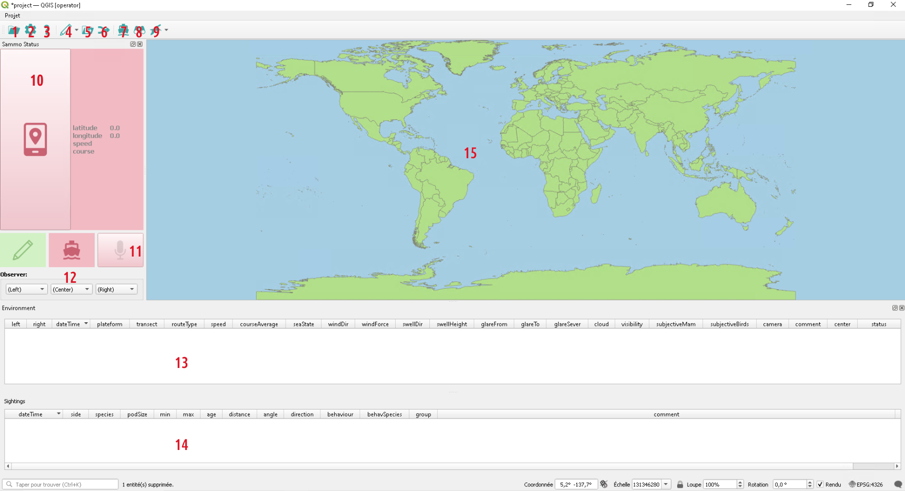
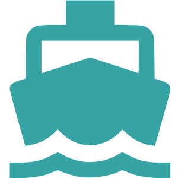

Interface
{kind=link}

The present capture shows the operator profile that includes only Sammo-boat features.
Toolbar
Most Sammo-boat tools are available in the plugin toolbar.
{kind=link}
{kind=link}
{kind=link}
{kind=link}
{kind=link}
{kind=link}
{kind=link}
{kind=link}
{kind=link}
{kind=link}
{kind=link}
{kind=link}
Status Panel
{kind=link}
{kind=link}
{kind=link}
{kind=link}
12 - Observer selection
Three combo box are available to select which observer are present on left, center and right side. The available value are generated from the observer table.
When the operator adds a new effort entity in the environment layer, the left/center/right fields will be populated from the current values in these combo boxes.
If needed, these values can be modified by using the “Duplicate or change current feature” action.
Tables and map
11 - Environment table
The environment table is used to modify environment entity attributes. Most attributes are duplicated from the previous entity.
Environment entity describes environmental variables during the session.
To keep trace of different routes, according their routeType attribute.
A status will be assigned automatically to each entity.
Only the Begin status entity will be created by the operator. Entities with
End status will be created only on export.
12 - Sighting table
The sighting table is used to modify sighting entity attributes. Sighting entity describes an observation made by the operator.
13 - Map canvas
User can follow the ongoing session on the map canvas. The following tables are displayed:
world (as background map)
transect

environmenent
{kind=link}
{kind=link}
{kind=link}
{kind=link}